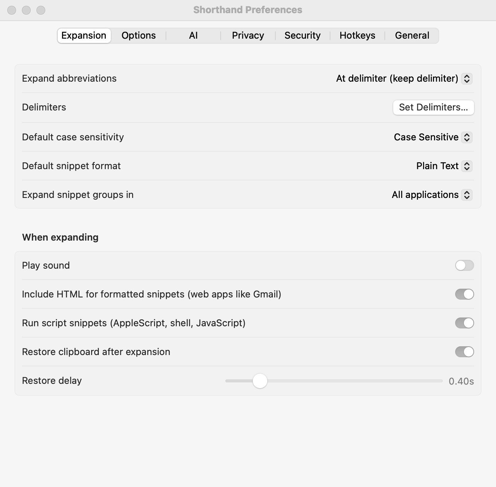
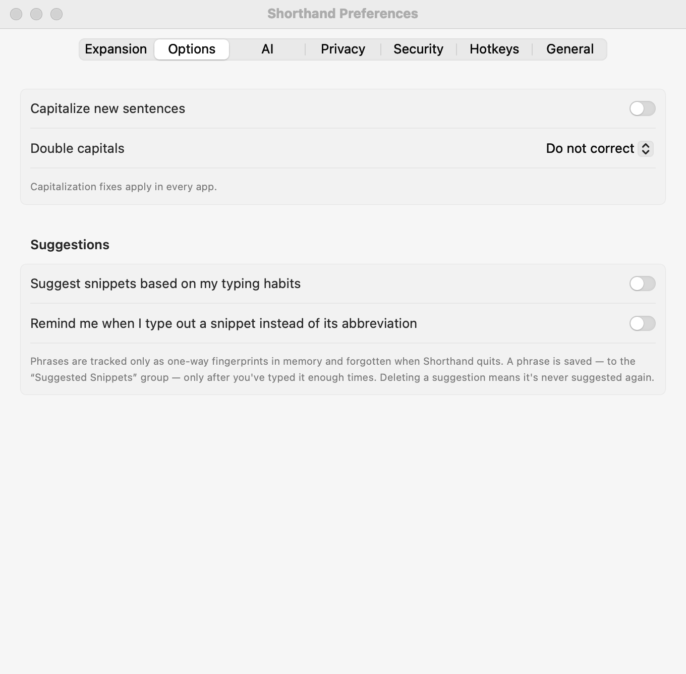

Abbreviations & Expansion
How Shorthand Expander™ notices an abbreviation and replaces it with your snippet, and the settings that control it.
When abbreviations expand
Choose in Settings ▸ Expansion ▸ Expand abbreviations:
- At delimiter (keep delimiter) (default)
- Type the abbreviation, then a delimiter such as a space. The snippet replaces the abbreviation and the space stays after it.
- At delimiter (abandon delimiter)
- Same, but the delimiter is dropped. Handy when snippets end with their own punctuation.
- Immediately when typed
- Expands the moment the last letter is typed. Fastest, and best for auto-correct style groups (
teh→the), but make sure no abbreviation is the start of another.
A single snippet can override the keep/drop choice with %+ (keep) or %- (drop). See Macro Reference.
Delimiters
A delimiter is the key you press after an abbreviation to make it expand. By default these are Space, Tab, Return, and Esc.
- In Settings ▸ Expansion, click Set Delimiters… (shown only for the two delimiter modes).
- Select the keys you want, such as . , ! or ?.
- Click Done. Defaults puts back Space, Tab, Return, and Escape.
Upper and lower case
Each snippet has a case setting next to its abbreviation. New snippets use Settings ▸ Expansion ▸ Default case sensitivity.
| Setting | Abbreviation sig; you type… |
|---|---|
| Case Sensitive | Only sig expands. |
| Ignore Case | sig, Sig, and SIG all expand to the same text. |
| Adapt to Case of Abbreviation | sig → “best regards”; Sig → “Best regards” (first letter capitalized); SIG → “BEST REGARDS”. |
Expand after
Each group decides what may come right before an abbreviation. Select the group and choose Expand after:
| Choice | Abbreviation btw expands in… |
|---|---|
| Whitespace | “ btw” at the start of a line or after a space, but not “(btw”. |
| All but letters and numbers | Also “(btw” or “—btw”, but not “abtw”. |
| All characters | Anywhere, even in the middle of a word. Useful for symbols, e.g. :) → ☺. |
Good to know
- When two abbreviations both match, the longer one wins.
- Shorthand Expander forgets what you were typing when you click, use arrow keys, use a ⌘ or ⌃ shortcut, press ⌥⌫, or switch apps. Retype the abbreviation in one go.
- Abbreviations don’t expand inside the app’s own windows, so you can type them in the editor.
- If you keep typing while a snippet is being inserted, your keystrokes are held and typed right after it.
- Shorthand Expander inserts text by pasting it, then puts your clipboard back. Turn this off with Restore clipboard after expansion, or set Restore delay (0.15–2 seconds, default 0.40) if a slow app pastes the wrong thing.
- To pause all expansion, choose Disable Expansion from the menu bar icon, or set a hotkey for Enable/Disable Expansion.
Other expansion settings

In Settings ▸ Expansion ▸ When expanding:
- Play sound and Sound: a sound on every expansion (groups can choose their own).
- Include HTML for formatted snippets (web apps like Gmail): helps formatting survive in web apps.
- Run script snippets (AppleScript, shell, JavaScript): see Script Snippets.
In Settings ▸ Options (these work even without snippets):

- Capitalize new sentences: “. hello” becomes “. Hello”.
- Double capitals: fixes “THe” to “The”: Do not correct, Eliminate at sentence start, or Eliminate at word start.